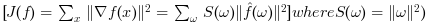
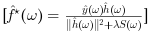

Deconvolution by Sobolev Regularization
imout = imdeconvsobolev(imin,psf,lambda)
Source Image
Blur function
Regularization parameter
Deblurred Image
L2 regularization did not perform any denoising. To remove some noise, we can penalize high frequencies using Sobolev regularization (quadratic grow).
The Sobolev prior reads (note the conversion from spacial domain to Fourier domain)

Since this prior can be written over the Fourier domain, one can compute the solution to the deblurring with Sobolev prior simply with the Fourier coefficients:

Compute the Sobolev prior penalty S (rescale to [0,1]).1. Advanced Signal, Image and Surface Processing, Ceremade, Université Paris-Dauphine